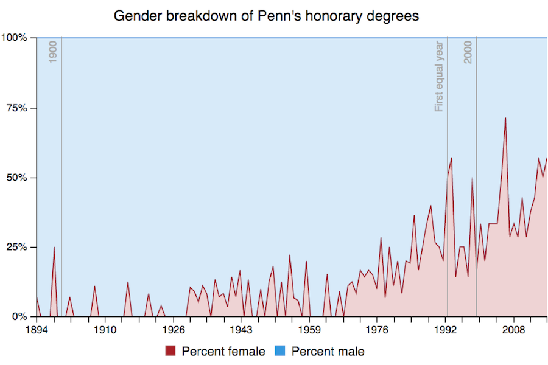

Penn Law students write open letter urging City Council to pass bill against unjust evictions
Penn Law students write open letter urging City Council to pass bill against unjust evictions
December 2018, Reporting and Writing
 Penn senior Anea Moore sees her Rhodes Scholarship as a chance to provide access for others
Penn senior Anea Moore sees her Rhodes Scholarship as a chance to provide access for others
November 2018, Reporting and Writing
 GOP candidate Pearl Kim tells Penn students she wants to 'change the narrative' of politics
GOP candidate Pearl Kim tells Penn students she wants to 'change the narrative' of politics
October 2018, Reporting and Writing
 Editorial | The 2018 Report on Diversity at The Daily Pennsylvanian, Inc.
Editorial | The 2018 Report on Diversity at The Daily Pennsylvanian, Inc.
April 2018, Writing and Data Visualization

A breakdown of the 1,740 honorary degrees Penn has granted in the last three centuries
February 2018, Data Analysis and Visualization
 Can you predict who will go to the Ivy League tournament?
Can you predict who will go to the Ivy League tournament?
February 2018, Coding and Tiebreaker Logic
 How many times has Trump mentioned his Wharton education? We crunched the numbers.
How many times has Trump mentioned his Wharton education? We crunched the numbers.
January 2018, Data Analysis, Visualization, Writing
 Here are heat maps of every reported crime near campus since last fall
Here are heat maps of every reported crime near campus since last fall
October 2017, Data Analysis and Writing
 Here are all of the courses that double count next semester
Here are all of the courses that double count next semester
October 2016, Data Analysis
 Hundreds of supporters march for Bernie Sanders in Center City
Hundreds of supporters march for Bernie Sanders in Center City
February 2016, Reporting and Writing